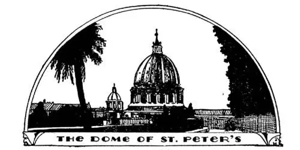
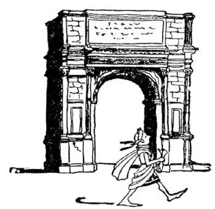
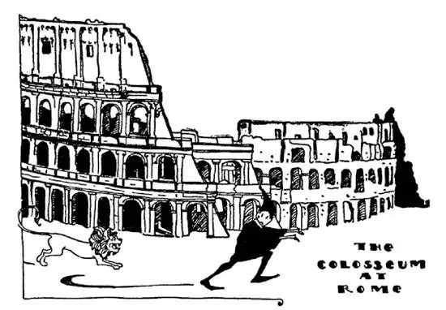
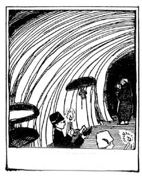

36
The Dead and Alive City
死亡而又活着的城市

Two thousand years ago you could start out on any road anywhere, and if you kept on going far enough you would at last come to a great city in Italy called Rome, for at that time “all roads led to Rome.” Rome was then the largest, the richest, the most beautiful, the most important city in the World. It was the capital of the World.
Rome was built on seven hills, and seven was supposed to be a lucky number. Through Rome runs a river called Tiber, whose waters the Romans thought were ruled over by a god called Father Tiber, to whom they prayed to save them from drowning and shipwreck.
The old Rome of that time is now dead, mostly in ruins, but there is a saying that Rome will live forever—that it is “Eternal”—and though old Rome is in ruins, there is a new Rome. The new Rome, however, is no longer the capital of the World. It is now only the capital of Italy.
Rome is still the capital, however, of all Roman Catholics in the World, and the head of all the Roman Catholic churches in the World lives there. He is called the Pope, which means “Papa.”
St. Peter is supposed to have been crucified and his bones buried in Rome. It is said that on this spot a religious service has been held every single day since the time of St. Peter to the present—that is, for about 1,900 years. At first these services had to be held in secret at night, for most of the Romans did not believe in Christ, and any one who did was likely, if caught, to be thrown into prison or even put to death. But over this same spot, many hundreds of years later, was built the largest church in the World. It is called St. Peter’s.
On the top of St. Peter’s is an immense dome copied after Brunelleschi’s dome in Florence, but much larger. It was built by that great artist Michelangelo, who, I told you, was an architect as well as sculptor and painter. St. Peter’s is so large that on the roof is a village of small houses, a village in which live the caretakers of the church.
The front door of St. Peter’s is never closed night or day, but just to the right of that door is another door of bronze that is never opened except every twenty-five years. It is called the Holy Door and it is walled up with stone. At the end of every twenty-five years this wall has to be taken down in order to open the door.
St. Peter’s is so large that thirty services can be carried on at one time without one interfering with another. Inside the church everything is huge, to match the building. The statues of angels are the size of giants and the doves are the size of eagles. There is a bronze statue of St. Peter himself seated on a throne. This is one of the few statues there of natural size. Good Catholics from all over the World, when they come to St. Peter’s, kiss the statue’s bronze foot. So many millions have kissed it that they have kissed away all his toes.
At Easter and at other celebrations the inside walls of St. Peter’s are hung with crimson silk, thousands of candles burn, choir boys chant and altar boys swing smoke of burning incense to the high roof, while hundreds of priests in gorgeous robes and cardinals in red caps and red gowns and the Pope himself, the head of all the Catholics in the World, in glistening white, move in stately procession down the main aisle to the high altar, over the spot where, 1,900 years before, St. Peter himself was crucified and a Christian would have been afraid to show himself for fear of being killed.

圣彼得教堂
St. Peter’s is the largest church in the World
圣彼得教堂是世界上最大的教堂
The Pope lives next door to St. Peter’s in an immense house called the Vatican. Your house may have a dozen rooms, or perhaps even a score, but it is said that the Vatican contains more than a thousand rooms. There are so many rooms that probably no one has ever counted them all. Many of the large rooms are filled with famous pictures and sculpture. They are art museums which people may visit. One room is the Pope’s private chapel. It is called the Sistine Chapel. Michelangelo painted pictures on the ceiling and walls of this chapel. In order to see the pictures on the ceiling comfortably you have to lie flat on your back or look at them in a mirror held in your hand.
Before the time of St. Peter, when people believed in many gods, another church was built in Rome “To All the Gods.” This building is still standing. It is called the Pantheon, which means “All Gods.” The Pantheon too has a dome, but it is not like St. Peter’s. The dome of St. Peter’s is like a giant cup turned upside down. The dome of the Pantheon is like a giant saucer turned upside down. There are no windows at all in the Pantheon, but there is a large hole in the top of the saucer called an “eye” which looks toward heaven, and through this eye the sun shines and the rain falls. It is so high above the floor, however, that the rain scarcely wets the floor beneath, but evaporates before reaching it.

提图斯凯旋门
It was built to honor Titus because he destroyed Jerusalem
人们修建凯旋门向提图斯表示敬意，因为他摧毁了耶路撒冷
Most of the buildings in Rome that were built about the time of Christ are in ruins, but the Pantheon is still almost the same as it was when first built. Around and about the very old buildings the dust and dirt and rubbish of the city had collected for two thousand years and had gradually piled higher and higher until the ruins were twenty feet or more lower than the present city, so that it has been necessary to dig them out.
In those days long ago there was a great market-place in Rome called the Forum. Around the Forum were beautiful palaces, court-houses, temples, and arches. The arches were built so that generals, when they returned from the wars they had fought and won, might ride in triumph through them. One of these arches is called the Arch of Titus. Titus was a Roman Emperor who destroyed the capital city of the Jews called Jerusalem and this arch was built to celebrate the event. Another arch is the Arch of Constantine. Constantine was the first Emperor of Rome to believe in Christ. That was not until three hundred years after Christ had died.

The ghost of a lion that used to kill Christians in the Colosseum
竞技场里杀死基督徒的一头狮子的鬼魂
The old Romans had a peculiar idea of fun. They liked to watch fights between men and wild animals such as lions and tigers, and they liked to see the men and animals kill each other. Sometimes the men were prisoners who had been captured in battle, sometimes they were just Christians whom the Roman Emperors wanted to put to death. So a great stadium was built where the Romans could sit in safety and watch these fights as we watch football or baseball games. This stadium is called the Colosseum and, though it is partly in ruins, most of it is still standing and you can still see the dens where the wild animals were kept before they were let loose into the arena.

Inside of the roman catacombs
罗马地下墓窟的内部情景
As the Christians were afraid to worship above ground where the Romans would see them, they hid in secret cellar-like places where they could worship as they pleased. Just outside of Rome, underneath the ground, are miles upon miles of these cellar-like rooms where they worshiped and where they were buried when they died. They are called Catacombs. Millions of the Christians were buried in the Catacombs.
【中文阅读】
两千年前，如果你从地球上的任意一个地方的任意一条路出发，只要你不停地行走，最终你会来到意大利一个叫罗马的伟大的城市，因为那个时候“条条大路通罗马”。那时，罗马是世界上面积最大、最富有、最漂亮、最重要的城市。罗马是世界的首都。
罗马建立在七座小山之上，“七”被认为是一个幸运数字。一条叫台伯的河流穿过罗马城。罗马人认为是一位名叫“台伯老人”的神掌管着这片河水。罗马人向这位神祷告，祈求他保佑罗马人不会溺水而死或遭遇船难。
那个时候的古罗马城现在已不复存在，多半已是废墟。但是，人们又常说，罗马永远活着——也就是说，罗马是“永恒的”。尽管古罗马已是一片废墟，但现在有一个新罗马。然而，新罗马不再是世界的首都，现在只是意大利的首都。
但是，罗马仍然是全世界天主教的中心，全世界所有天主教会的领袖就住在罗马，他被尊称为“教皇”，就是“父亲”的意思。
人们认为圣彼得被钉死在十字架上之后，他的遗骨就埋在罗马。据说，从圣彼得时代到现在大约1900年的时间，在这个地方，每天都会举行宗教仪式。起初，这些宗教仪式不得不在晚上秘密进行，因为大多数罗马人不信仰基督。如果有人信仰基督，一旦被发现，就会被扔进监狱，甚至被处死。但是，许多世纪以后，就是在这个地方，修建了世界上最大的教堂——圣彼得教堂。
圣彼得教堂的顶部是巨大的圆屋顶，仿照意大利佛罗伦萨的建筑师布鲁内莱斯基设计的圆屋顶，但要比它大得多。圣彼得教堂的圆屋顶，是由那位伟大的艺术家米开朗基罗建造的。我曾跟你们说过，米开朗基罗不仅是个雕刻家和画家，还是建筑家。圣彼得教堂如此之大，以至于在它的顶部有一个由很多房屋组成的居民村，里面住着教堂的管理人员。
无论是白天还是夜晚，圣彼得教堂的前门从来都是敞开的，但是，就在这扇门的右侧有一扇青铜门，每隔25年才会打开一次，其余时间从不打开。它被称为“神圣之门”，并用石头筑墙将它围了起来。在每个第25年的年末，为了打开这扇门，人们不得不拆除这堵石墙。
圣彼得教堂大得可以一次同时举行三十个宗教礼拜仪式而不会彼此干扰。为了与这个巨型建筑物相配，教堂内每一件东西都是巨大的，天使的雕像如巨 人一般大，鸽子如老鹰一般大。这儿有一座圣彼得坐在宝座上的青铜雕像。这是这儿仅有的几个真人般大小的雕像之一。世界各地虔诚的天主教徒来到圣彼得大教堂，亲吻雕像的铜脚，来膜拜的天主教徒是如此之多，以至于雕像的所有脚趾头都被吻没了。
在复活节以及其他庆祝活动的时候，圣彼得教堂的内墙上都会挂上深红色的丝绸，点上数千只蜡烛，唱诗班的男孩子们吟唱赞美诗，祭坛的侍者摆动燃烧的香使烟飘向高高的穹顶。与此同时，数百位牧师穿着华丽的袍子，红衣主教头戴红色帽子、身穿红色长袍，还有全世界天主教徒的领袖——教皇，穿着闪闪发光的白色长袍，他们组成庄严的队伍，沿着主通道走向高高的祭坛。就在祭坛下方这个地点，1900年前，圣彼得被钉死在十字架上，当时的基督徒担心被害都不敢在这儿露面。
教皇住在紧邻圣彼得教堂的一个巨大无比的被称之为“梵蒂冈”的房子里。你家的房子也许有十二间房间，或甚至二十间。但据说梵蒂冈有一千多间。有这么多的房子，以至于很可能没人数过。很多大房间里装满了雕像和名画。这些房间都是艺术博物馆，人们可以去参观。有一个房间是教皇的私人教堂，被称之为“西斯廷礼拜堂”，这个礼拜堂的穹顶上和墙壁上都是米开朗基罗绘的画。为了能很舒服地看穹顶上的画，你得仰面躺下来，或手上拿着一面镜子来看才行。
在圣彼得时代之前，人们信仰的神有很多，于是就在罗马建立了另一个教堂“献给一切诸神”。这座建筑物至今依然屹立在那儿，被称之为“万神庙”。“万神”表示“所有的神”。万神庙也有一个圆顶，但是与圣彼得的不一样。圣彼得的圆顶就像一个巨大的杯子倒扣着，而万神庙的圆顶则像一个巨大的茶碟倒扣着。万神庙里没有一扇窗户，但是在“茶碟”的顶部有一个巨大的孔，这个孔朝向天，被称之为“眼睛”。阳光可以穿过这个孔照射进来，雨水也可以通过这个孔滴进来。然而，由于它高耸于地面之上，雨水几乎不能打湿下面的地面，因为雨滴还没有落到地面就已经蒸发了。
修建于基督时期的罗马建筑物，现在多数都成废墟了，但是，万神庙却依然如刚刚修建时一样。在古老建筑物的四周，积聚了两千年的城市尘土和垃圾越堆越高，直到废墟比现在的城市至少低20英尺，所以现在有必要把它们挖出来。
在很久以前的罗马，有一个超级大的市场，叫“广场”。在广场四周，是美丽的皇宫、宫廷建筑群、庙宇和拱门。修建这些拱门，是为了让那些打仗得胜 归来的将军们可以骑着马耀武扬威地穿过拱门。其中有一扇拱门叫“提图斯凯旋门”。提图斯是一位罗马皇帝，他摧毁了犹太人的首都耶路撒冷，于是就修建了这座拱门来庆祝这件事。还有一个拱门叫“君士坦丁大帝凯旋门”。君士坦丁是第一位信仰基督的罗马皇帝，那是基督死后三百年的事了。
古罗马人有一种特别的取乐方式。他们喜欢观看人与诸如狮子、老虎之类的野兽进行搏斗，观看人与动物互相残杀。有时候这些人是从战场上俘获的俘虏，有时候是罗马皇帝想要处死的基督徒。于是就修建了一座巨大的“体育场”，罗马人可以很安全地坐在里面观看人兽搏斗，就像我们观看足球或棒球比赛一样。这个“体育场”叫做“竞技场”。尽管有些部分已成为废墟，但是大部分还矗立在那儿，你依然可以看见当年野兽被放进竞技场之前关押它们的兽穴。
由于基督徒们不敢在地面上敬拜神，担心被罗马人看见，于是他们就偷偷躲在像地窖一样的房间里按自己的愿望敬拜神。所以，就在罗马城外，在地面以下，这种像地窖一样的房子排起来有几十英里长，基督徒们在这儿敬拜神，他们死了也埋在这里。这儿被称作“地下墓窟”，成百上千万的基督徒埋葬在这里。